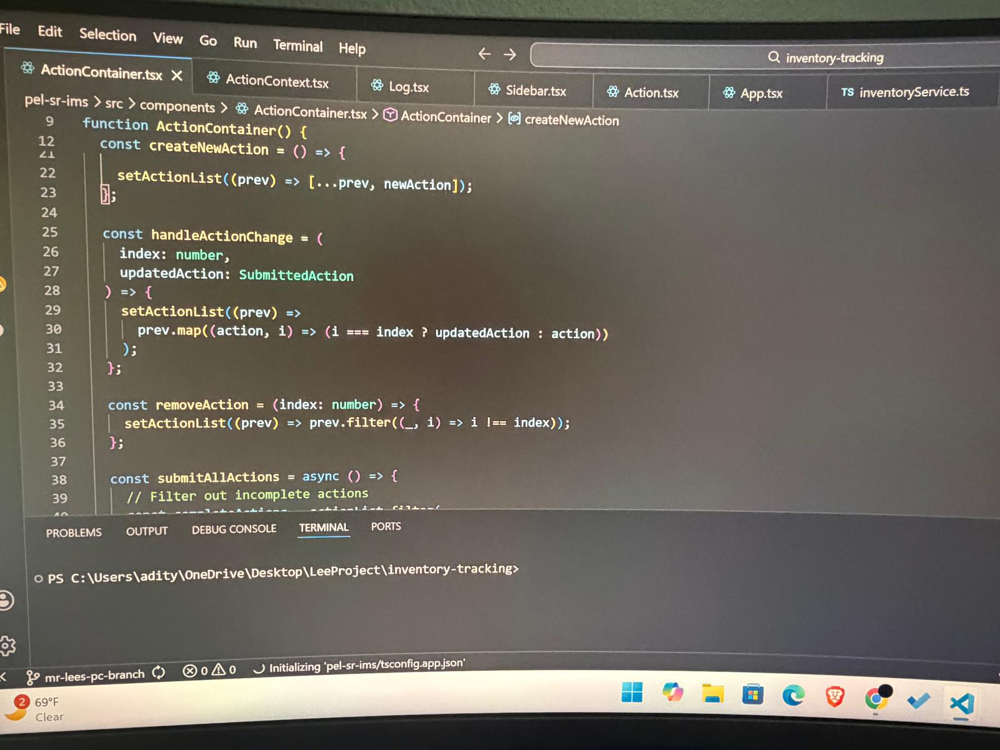
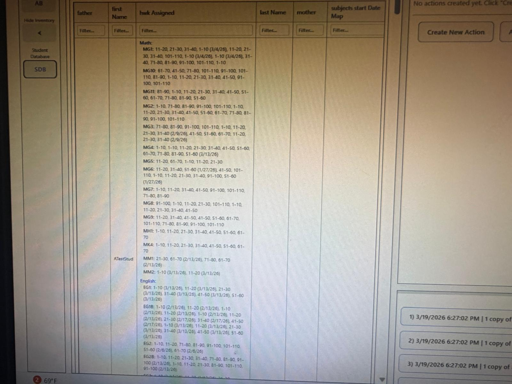
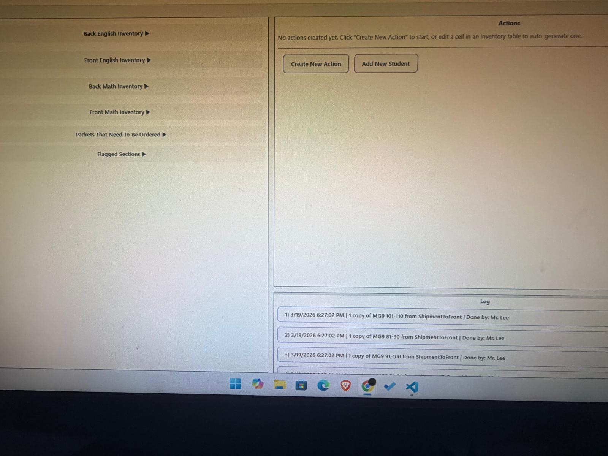
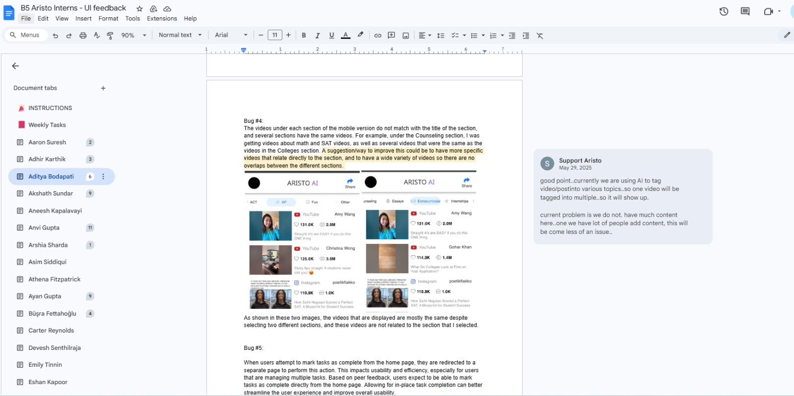
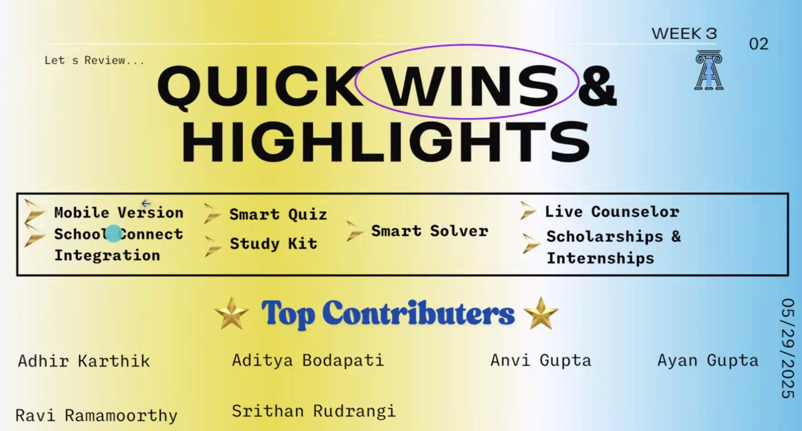
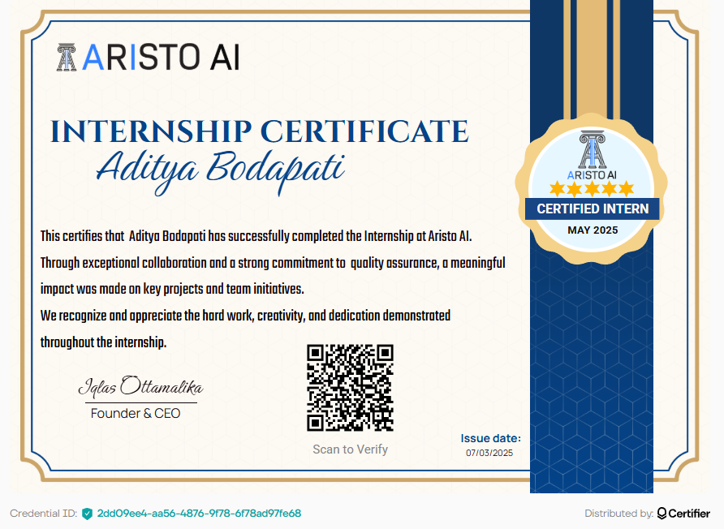

Lead Developer and Design Intern - PEL Learning Center
Supervisor Contact Information
Name: Gabriel Lee
Email: pelsanramon@gmail.com
Phone: (925) 336-6108
Experience Overview
During my internship at PEL Learning Center, I developed an inventory and student management system using React, Typescript, and TailwindCSS. On top of that, I worked with a back end Firebase to manage and update student and parent information. This system is currently being used to efficiently manage center operations. While developing this website/application, I gained a series of new skills, ranging from technical skills such as debugging and writing scalable code to soft skills such as patience, problem solving, and critical thinking.
Documentation & Photos



Product Tester and Developer – Aristo AI
Supervisor Contact Information
Name: Iqlas Ottamalika
Email: iqlas@aristoai.net
Experience Overview
During my internship at Aristo AI, I worked with developers that created an all in one online student support system, with a variety of features from SAT prep to college support. I was responsible for debugging the entire application and finding any issues or features that were not working as intended. I documented all of my findings thouroughly and efficiently communicated them to my team and the developers to fix the issues. Beyond this, I worked with the team to develop and implement new features to enhance usability and broaden the scope of the software. I was recognized as a top contributor every week, and at the end of the internship, I was one of a very few students that were invited to be a part of the Ambassador program.
Documentation & Photos



Software Engineering Intern – Hassoft Technologies
Supervisor Contact Information
Name: NVS Sastry
Email: sastry@hassofttechnologies.com
Phone: 9666910760
Experience Overview
During my internship at Hassoft Technologies, I worked on a school performance monitoring system responsible for maintaining student information. I was handling student grades, files, and reports, including family and financial information. I maintained organized records of this data to ensure that information was accurate and up to date. Towards the end of the internship, I was also involved in tracking both student and teacher attendance and progress. Through this internship, I learned how to manage large databases, create detailed reports, and collaborate with teams to achieve set goals and deadlines.
Documentation & Photos